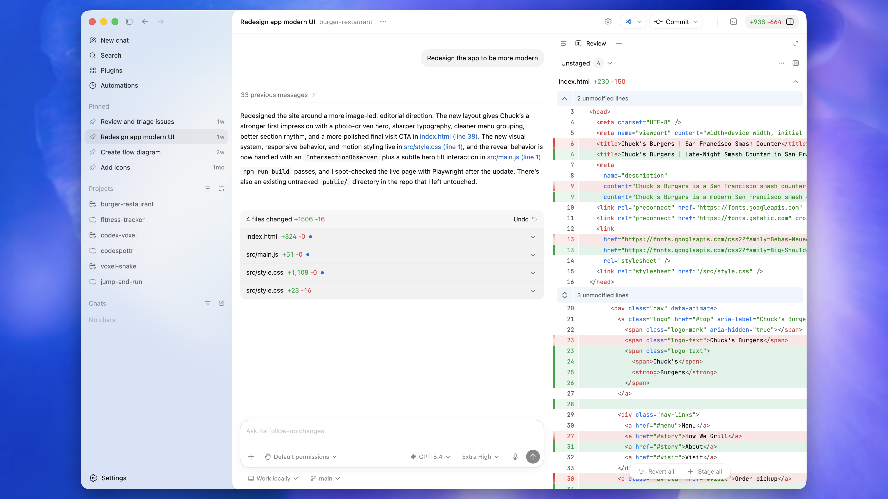
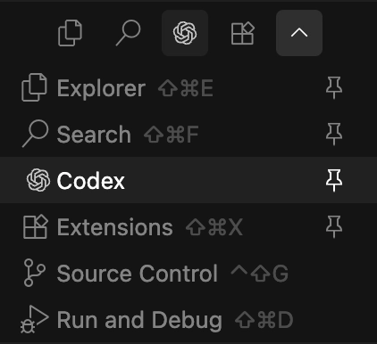
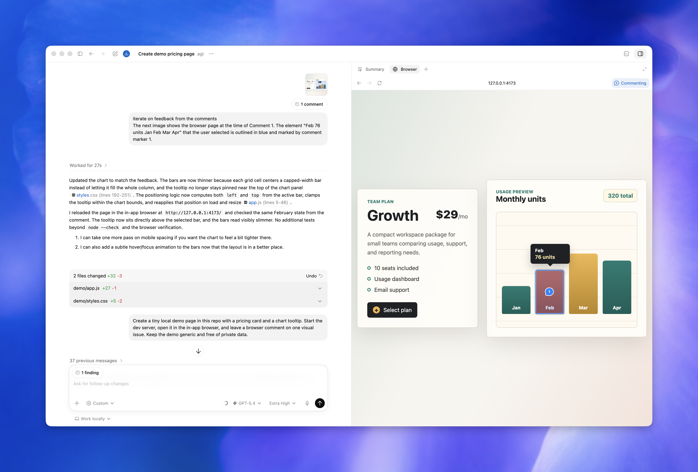
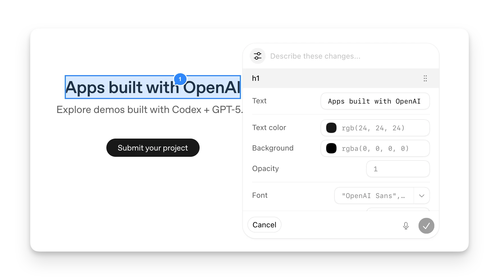
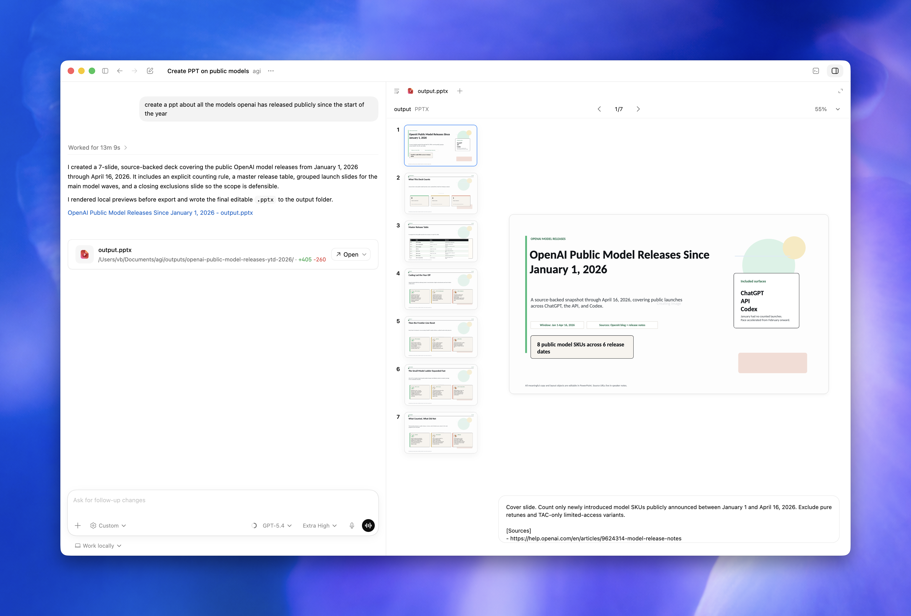
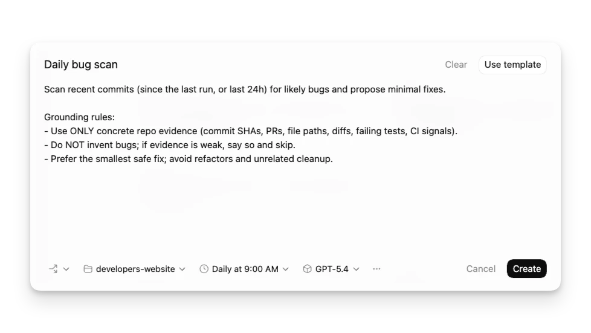
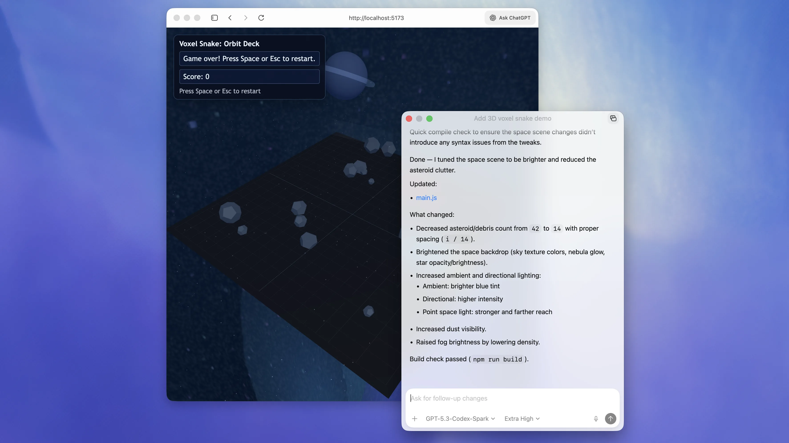
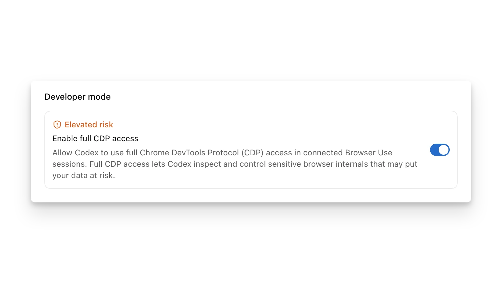

Codex 主要功能与使用技巧中文教程
版本说明：本文是非官方学习教程，根据 OpenAI Codex 官方手册整理，资料抓取时间为 2026-07-08。Codex 功能、模型、套餐和成熟度标签会随产品更新而变化，涉及价格、可用模型、企业策略时请以官方页面为准。
1. Codex 是什么
Codex 是 OpenAI 面向软件开发的 coding agent。它不是只回答问题的聊天助手，而是可以读取项目、编辑文件、运行命令、分析错误、写测试、审查 diff，并在需要时调用外部工具的开发协作者。
官方定位里，Codex 主要覆盖这些能力：
- 写代码：根据你的意图生成代码，并尽量贴合现有项目结构和风格。
- 理解代码库：阅读复杂或遗留项目，解释模块职责、调用链、数据流和风险点。
- 代码审查：识别潜在 bug、逻辑错误、遗漏边界条件和高风险改动。
- 调试修复：根据复现步骤、日志和测试失败定位原因并提交补丁。
- 自动化开发任务：执行重构、迁移、测试、环境检查、报告生成等重复流程。
一个实用的理解方式是：Codex 最适合承担“可以被验证的开发任务”。你给它目标、上下文、约束和完成标准，它负责探索、修改、验证、汇报。
2. 你可以用 Codex 做什么
代码生成与功能实现
适合任务：
- 新增页面、接口、命令行参数或组件。
- 按现有模式补齐业务逻辑。
- 从设计稿、截图或需求说明实现原型。
- 添加错误处理、边界条件和空状态。
建议让 Codex 先读取相邻文件、现有测试和项目约定。不要只说“加一个功能”，最好告诉它功能入口、期望行为、不能改动的接口和验证方式。
代码理解与系统梳理
适合任务：
- 新人上手一个仓库。
- 弄清请求链路、状态流、数据模型和依赖关系。
- 解释某个函数为什么这样写。
- 找出修改某个模块可能影响哪些地方。
技巧：让 Codex 输出“文件列表 + 调用链 + 风险点 + 建议阅读顺序”。这比单纯让它“解释代码”更容易落到可验证的结构。
Debug 与故障修复
适合任务：
- 修复失败测试。
- 复现 UI 或接口 bug。
- 分析堆栈、日志、CI 输出。
- 处理依赖升级后的破坏性变化。
高质量 bug prompt 应包含：
- 现象：用户看到什么，系统哪里不对。
- 复现步骤：如何稳定触发。
- 期望行为：正确结果是什么。
- 约束：哪些 API、数据结构或兼容行为不能变。
- 验证：修完后要跑哪些测试或手工检查。
测试与质量检查
Codex 可以：
- 补单元测试、集成测试、回归测试。
- 运行 lint、format、typecheck、test。
- 根据失败输出继续修复。
- 做本地 diff review，给出优先级明确的问题列表。
建议在任务结尾明确写：“完成后运行最小相关测试，并报告命令和结果。”
代码审查
Codex 的 review 模式适合在提交前查：
- 正确性问题。
- 回归风险。
- 安全问题。
- 缺失测试。
- 可维护性问题。
在 CLI 中可用 /review，在 Codex App 中可用 diff/review 面板，也可以在 GitHub PR 中通过 @codex review 触发云端审查。
非代码文件与交付物
在 Codex App 中，Codex 可以预览或生成 PDF、表格、文档、演示文稿等非代码产物。给这类任务时要说明：
- 输出文件类型。
- 内容结构。
- 格式要求。
- 检查标准。
- 保存位置。
3. 选择合适的使用入口
Codex 主要有几种使用形态。选择哪个入口，取决于你要做的任务和上下文在哪里。
| 入口 | 适合场景 | 主要优势 | 注意事项 |
|---|---|---|---|
| Codex App | 桌面端多线程工作、可视化 review、工作树、自动化、浏览器预览 | 图形界面、并行任务、Git 工具、内置终端、浏览器和 artifact 预览 | 非代码研究也可用 projectless chat |
| CLI | 终端开发、脚本化、远程机器、CI 风格任务 | 快、可组合、适合 codex exec 自动化 | 需要更明确地给文件路径和命令上下文 |
| IDE 扩展 | 边看代码边提问、选中代码解释、编辑器内修改 | 自动带入打开文件和选中代码，适合短反馈循环 | 注意 IDE context 是否开启 |
| Cloud | 并行、异步、远程执行、从 Slack/Linear/GitHub 委派任务 | 不占本机，适合多个任务同时跑 | 需要 GitHub 仓库和 cloud environment |
| GitHub 集成 | PR 审查、PR 修复 | 在 PR 里直接 @codex review 或 @codex fix... | 需要启用 Codex cloud 和代码审查设置 |
| Slack/Linear | 从协作工具委派任务 | 少切换上下文，适合团队流程 | 需要连接器和环境配置 |
简单判断：
- 正在编辑代码：优先 IDE 扩展或 App。
- 想在终端快速做事：用 CLI。
- 想跑长任务或并行多个方案：用 Cloud 或 App worktree。
- 想让它审 PR：用 GitHub 集成或本地
/review。 - 想把重复流程产品化：用 Skills 或 Plugins。
3.1 Codex 界面图速览
这一节放几张官方界面图，帮助你把后面提到的 App、CLI、IDE、浏览器预览、自动化和 artifact 预览对应到真实界面。图片文件已下载到本文同目录下的 assets/images/ 文件夹，离线打开 Markdown 时也能查看。
Codex App：线程、任务与代码审查界面

Codex App 是桌面端主工作台。左侧用于管理项目和线程，中间是对话和任务过程，右侧可以显示 diff、review、文件预览或相关上下文。适合多线程开发、查看 Codex 改动、加行内反馈、提交和推送代码。
来源：Codex App
Codex CLI：终端里的交互式 agent

CLI 适合终端用户、远程环境、脚本化任务和非交互执行。它可以在 TUI 中展示计划、命令、diff、审批提示和最终结果，也可以通过 codex exec 直接跑一次性任务。
来源：OpenAI Codex GitHub repository
Codex IDE Extension：编辑器侧边栏与代码上下文

IDE 扩展把 Codex 放进 VS Code 兼容编辑器。它能利用打开文件、选中代码和编辑器上下文，因此适合“边看代码边问”“选中一段让它解释/修改”“从 TODO 直接生成实现”等短反馈循环。
In-app Browser：本地页面预览和浏览器操作

In-app browser 适合预览本地开发服务器、检查页面布局、让 Codex 操作页面做 UI 验证。它和你的常规浏览器 profile 隔离，不共享登录态、cookies、扩展或已打开标签。
Browser Comments：在页面上标注具体反馈

浏览器评论可以把反馈绑定到页面区域。做前端时，你可以在按钮、卡片、表单或布局错位处直接标注，再让 Codex 根据这些可视化反馈修改代码。
Artifact Viewer：预览文档、表格、PDF 和演示稿

Codex App 可以预览非代码产物，例如 PDF、文档、表格和演示文稿。适合让 Codex 生成报告、整理表格、制作材料，并在同一工作区内检查结果。
Automations：定时或周期性任务

Automations 用于周期性检查、提醒、监控或后续工作。若任务依赖当前 thread 的上下文，使用 thread automation；若希望每次新开任务，使用独立或项目自动化。
Floating Pop-out：把当前线程悬浮到工作区旁边

浮动窗口适合前端、桌面 app 或设计调试。你可以把 Codex 放在浏览器、编辑器或预览窗口旁边，边看结果边继续给反馈。
Browser Developer Mode：更深入的浏览器调试

浏览器 Developer mode 可启用更完整的 Chrome DevTools Protocol 访问，用于性能分析和更深层的浏览器调试。它扩大了能力边界，团队环境中可能受管理员策略限制。
4. 第一次使用的推荐流程
第一步：从仓库根目录启动
CLI：
cd path/to/your-repo
codex
Codex App：添加项目时选择仓库根目录。
IDE：打开仓库根目录，并确保 Codex 扩展连接的是当前 workspace。
第二步：先让 Codex 认识项目
可以这样问：
请先阅读这个项目的结构，找出构建、测试、lint 命令，以及主要源码目录。
不要修改文件。最后给我一份上手摘要和你建议写入 AGENTS.md 的项目规则。
第三步：生成或完善 AGENTS.md
CLI 中可用：
/init
然后让 Codex 根据真实项目补充：
请基于 package.json、README、测试目录和现有 CI，完善 AGENTS.md。
重点写清楚：项目结构、常用命令、代码风格、测试要求、不要做的事。
第四步：从小而可验证的任务开始
不要一上来让 Codex “重构整个系统”。先让它做一个可以测试的小任务：
修复这个失败测试：<粘贴错误>
约束：不要改变公开 API。
完成后运行这个测试文件，并解释根因。
第五步：养成“实现 + 验证 + review”的闭环
每个任务尽量包含：
- 实现或修复。
- 运行相关检查。
- 查看 diff。
- 让 Codex 自审一次。
- 你再人工确认。
5. 写好提示词：让 Codex 更稳定
官方最佳实践建议，一个好 prompt 通常包含四类信息：
1. Goal：你要改变或构建什么。
2. Context：哪些文件、错误、截图、设计、日志相关。
3. Constraints：架构、安全、兼容性、风格、不能改的地方。
4. Done when：什么条件代表完成，比如测试通过、bug 不再复现、UI 达到截图效果。
好 prompt 的基本格式
目标：
<一句话说明要完成什么>
上下文：
- 相关文件：@src/foo.ts @src/foo.test.ts
- 当前问题：<错误、日志、截图或行为>
- 现有约定：<项目模式或文档>
约束：
- 不改变公开 API
- 不引入新依赖，除非先说明原因
- 保持现有代码风格
完成标准：
- 添加或更新测试
- 运行 <具体命令>
- 最后汇报改了什么、如何验证
任务越复杂，越应该先计划
适合先 /plan 的情况：
- 需求模糊。
- 涉及多个模块。
- 可能需要迁移数据或升级依赖。
- 修改有安全或兼容风险。
- 你还没决定方案。
示例：
/plan 我想把这个服务的配置加载逻辑从环境变量散落读取，改成集中 schema 校验。
请先调查现状，列出迁移步骤、风险、测试策略。先不要改文件。
让 Codex 采访你
当你只有模糊想法时，可以直接说：
我有个模糊需求：想改善这个 dashboard 的性能。
先不要写代码。请先问我最多 8 个关键问题，帮我把目标、指标、范围和验收标准具体化。
明确验证方式
Codex 在能验证时通常表现更好。可以写：
完成后请运行：
- npm run lint
- npm test -- src/foo.test.ts
如果某个命令失败，先判断是否与你的改动有关，再决定是否修复。
6. 常见工作流范例
解释代码库
请阅读这个仓库，解释一个请求从入口到数据库的完整链路。
输出：
1. 关键文件和职责
2. 请求流步骤
3. 数据校验发生在哪里
4. 修改这条链路时最容易踩的坑
修复 bug
Bug：设置页点击 Save 后显示保存成功，但刷新后开关恢复原值。
复现：
1. npm run dev
2. 打开 /settings
3. 切换 Enable alerts
4. 点击 Save
5. 刷新页面，开关恢复
约束：
- 不改变后端 API shape
- 保持当前 UI 文案
- 如可行，添加回归测试
请先复现或静态追踪根因，再提交最小修复并运行相关测试。
写测试
请为 @src/transform.ts 中的 invertList 添加单元测试。
覆盖：
- 正常路径
- 空数组
- 单元素
- 输入包含重复值
遵循现有测试风格，不要引入新测试框架。
从截图实现 UI
请根据这张截图实现页面。
要求：
- 复用现有组件和 design tokens
- 保持响应式
- 不写营销落地页，要实现可用的实际界面
- 完成后启动 dev server，并用浏览器截图检查桌面和移动端
本地 review
/review
或：
请审查当前未提交改动。
重点关注：正确性、回归风险、安全、缺失测试。
按严重程度排序，给出文件和行号。不要只做风格建议。
7. 线程、上下文、Plan mode 与 Goal mode
Thread 是一次连续工作会话
一个 thread 包含你的提示、Codex 的模型输出、工具调用和后续追问。你可以在同一 thread 里先实现，再让它补测试，再让它 review。
注意：可以同时运行多个 thread，但不要让两个 thread 同时修改同一批文件，否则容易产生冲突。
本地线程与云线程
本地线程：
- 在你的机器上运行。
- 可以读写你的工作区文件。
- 可以运行本地命令。
- 受本地沙箱和审批策略限制。
云线程：
- 在隔离的 OpenAI 托管环境运行。
- 会克隆 GitHub 仓库并 checkout 分支。
- 适合并行、异步或从其他设备委派任务。
- 需要先把代码推到 GitHub，并配置 cloud environment。
上下文与自动压缩
Codex 会把提示、文件内容、命令输出、已完成步骤等放进模型上下文。长任务可能触发自动 compact：把前文摘要保留，把不重要内容丢掉。你也可以用 /compact 主动整理上下文。
Plan mode
Plan mode 适合复杂任务的前置分析。可用方式：
/plan
或：
/plan 请先调查这个模块的认证流程，提出改造方案，不要修改文件。
Goal mode
Goal mode 给 Codex 一个持续目标，适合长任务。可用：
/goal 将这个项目从 JavaScript 迁移到 TypeScript，并确保 strict mode 下无显式 any。
好 goal 应该可判断是否完成：
- 有明确成果。
- 有可测指标。
- 有完成标准。
如果目标还不清楚，先 /plan，让 Codex 帮你把 goal 写清楚。
8. 权限、沙箱与安全
Codex 的安全控制主要由两层组成：
- Sandbox mode：技术上允许 Codex 访问哪里、写哪里、是否能联网。
- Approval policy：什么时候必须停下来请你批准。
常见沙箱模式
| 模式 | 行为 | 适合场景 |
|---|---|---|
read-only | 主要读取和分析，不自动改文件 | 代码审阅、调研、不确定是否信任项目 |
workspace-write | 可在工作区内读写并运行常规命令 | 日常开发默认推荐 |
danger-full-access | 不受沙箱限制 | 只在外部环境已隔离且你完全信任任务时使用 |
常见审批策略
| 策略 | 行为 | 适合场景 |
|---|---|---|
untrusted | 对不在可信集内的命令请求审批 | 不熟悉项目或更谨慎的环境 |
on-request | 沙箱内自动执行，越界时询问 | 日常交互式开发 |
never | 不弹审批，Codex 尽力在限制内完成 | 非交互自动化或你已设置好安全边界 |
推荐默认组合
日常本地开发：
codex --sandbox workspace-write --ask-for-approval on-request
只读调研：
codex --sandbox read-only --ask-for-approval on-request
谨慎使用 full access：
codex --sandbox danger-full-access --ask-for-approval never
Full access 会扩大风险边界。除非任务和环境都可信，否则优先用工作区沙箱加规则例外。
网络访问
默认本地 workspace-write 下，命令网络访问通常是关闭的。需要时可在 config.toml 中启用：
[sandbox_workspace_write]
network_access = true
如果只需要查资料，Codex 的 web search 与命令级网络访问是不同层面的能力。不要因为需要查文档就无脑放开所有命令联网。
Web search 模式
web_search = "cached" # 默认，使用缓存索引
# web_search = "live" # 获取最新网页
# web_search = "disabled"
涉及最新信息时，用 live 或明确让 Codex 浏览；涉及安全敏感任务时，要把网页内容视为不可信输入。
9. 配置文件 config.toml
Codex 的本地配置默认在：
~/.codex/config.toml
项目级配置可以放在：
.codex/config.toml
项目配置只在项目被信任时加载。多个配置层的优先级大致是：
1. CLI flags 和 --config 覆盖。
2. 项目 .codex/config.toml，离当前目录越近优先级越高。
3. 选中的 profile 文件。
4. 用户级 ~/.codex/config.toml。
5. 系统配置。
6. 内置默认值。
常用配置示例
model = "gpt-5.5"
model_reasoning_effort = "high"
approval_policy = "on-request"
sandbox_mode = "workspace-write"
web_search = "cached"
personality = "friendly"
[sandbox_workspace_write]
network_access = false
[features]
multi_agent = true
hooks = true
fast_mode = true
一次性覆盖
codex --model gpt-5.5
codex -c model='"gpt-5.5"'
codex -c sandbox_workspace_write.network_access=true
注意：-c 的值按 TOML 解析，字符串通常要额外加引号。
Profile
可为特定场景创建 profile：
# ~/.codex/deep-review.config.toml
model = "gpt-5.5"
model_reasoning_effort = "xhigh"
approval_policy = "on-request"
使用：
codex --profile deep-review
codex exec --profile deep-review "review this change"
环境变量传递
为避免泄露 secrets，可限制命令子进程能看到哪些环境变量：
[shell_environment_policy]
inherit = "none"
include_only = ["PATH", "HOME"]
exclude = ["AWS_*", "AZURE_*"]
10. 模型、推理强度与速度
官方手册当前建议：大多数 Codex 任务从 gpt-5.5 开始。它适合复杂编码、工具使用、规划、多步执行、电脑操作、知识工作和研究。轻量任务或子代理可考虑 gpt-5.4-mini。gpt-5.3-codex-spark 是面向 ChatGPT Pro 用户的研究预览模型，偏近实时迭代。
模型选择建议
| 任务 | 推荐 |
|---|---|
| 复杂重构、迁移、调试 | gpt-5.5 + high 或 xhigh reasoning |
| 常规实现、补测试 | gpt-5.5 + medium/high |
| 快速扫文件、子代理探索 | gpt-5.4-mini |
| 近实时文本迭代 | gpt-5.3-codex-spark，如账号可用 |
推理强度
model_reasoning_effort = "high"
经验：
low：明确、简单、低风险。medium：多数日常任务。high：复杂调试、跨模块修改、安全/审查。xhigh：长任务、迁移、架构级判断。
Fast mode
CLI 中可用：
/fast on
/fast off
/fast status
Fast mode 会提高速度，但消耗更多 credits。适合你更重视等待时间的交互任务。
11. Codex App 使用技巧
Codex App 是桌面端工作台，适合并行处理项目、审查 diff、使用 worktree、运行自动化和预览 artifact。
Local、Worktree、Cloud 三种模式
- Local：直接在当前项目目录工作。
- Worktree：创建 Git worktree，让改动隔离在独立 checkout 中。
- Cloud：在远程环境运行。
Worktree 适合试验新方案、并行任务、避免污染当前工作区。Automations 在 Git 仓库中通常会使用专用后台 worktree。
内置 Git 工具
App 的 diff pane 可以：
- 查看改动。
- 给具体行加反馈。
- stage/unstage。
- revert 文件或 hunk。
- commit、push、创建 PR。
建议在 Codex 完成实现后，让它先自审，再用 diff pane 做人工确认。
内置终端
每个 thread 都有项目或 worktree 作用域内的终端。常用：
git status
npm test
npm run lint
pnpm test
Codex 可以读取当前终端输出，因此你可以先手动运行 dev server 或测试，再让 Codex 根据失败输出继续处理。
In-app browser
适合：
- 预览本地开发服务器。
- 检查页面布局。
- 对页面局部加评论。
- 让 Codex 操作本地页面做测试。
限制：
- 不适合需要登录态的页面。
- 不使用你的常规浏览器 profile、cookies、扩展或已打开标签。
Computer Use
Computer Use 可让 Codex 操作 macOS 或 Windows 应用。适合：
- 桌面应用测试。
- GUI-only bug 复现。
- 需要点击、输入、查看屏幕的流程。
因为它可能影响工作区之外的系统状态，任务要写窄，审批提示要仔细看。
语音输入与弹出窗口
App 支持语音 dictation 和浮动 thread 窗口。前端开发时，把 thread 弹到浏览器旁边，让 Codex 迭代 UI 会很顺手。
12. Codex CLI 使用技巧
交互模式
codex
codex "Explain this codebase to me"
CLI 中你可以：
- 输入 prompt、粘贴代码、附加图片。
- 查看计划、命令、diff。
- 用
/permissions调整权限。 - 用
/model切换模型。 - 用
/review做审查。 - 用
/status查看模型、权限、上下文等。
恢复会话
codex resume
codex resume --last
codex resume --all
codex resume <SESSION_ID>
适合继续之前的长任务，不用重新解释上下文。
非交互执行
codex exec "fix the CI failure"
适合：
- 脚本化。
- CI/CD 辅助。
- 批处理任务。
- 自动生成报告或 changelog。
图片输入
codex -i screenshot.png "Explain this error"
codex --image img1.png,img2.jpg "Summarize these diagrams"
常用 slash commands
| 命令 | 用途 |
|---|---|
/permissions | 调整权限模式 |
/model | 切换模型和推理强度 |
/plan | 进入计划模式 |
/goal | 设置或管理长期目标 |
/review | 审查当前 diff |
/diff | 查看 Git diff |
/mention | 附加文件或目录 |
/mcp | 查看 MCP 工具 |
/skills | 选择技能 |
/compact | 压缩上下文 |
/status | 查看当前会话状态 |
/fork | 分叉当前会话 |
/side 或 /btw | 开一个不干扰主线的旁路对话 |
13. IDE 扩展使用技巧
Codex IDE 扩展适合在 VS Code、Cursor、Windsurf 等 VS Code 兼容编辑器中工作。
核心优势：
- 自动包含打开文件和选中代码上下文。
- 可直接从编辑器让 Codex 修改文件。
- 可用模型选择器和 reasoning 选择器。
- 可把任务委派到 Cloud。
常用方式：
Use @example.tsx as a reference to add a new page named "Resources".
命令面板中常见命令：
- Add selected text range as context。
- Add entire file as context。
- Create a new thread。
- Implement selected TODO。
- Open Codex sidebar。
技巧：如果 Codex 的回答像是没看到你正在看的文件，检查 IDE context 或手动 @ 文件。
14. Cloud、GitHub、Slack 与 Linear
Codex Cloud
适合：
- 长任务。
- 并行任务。
- 从 IDE/App/CLI/移动设备委派。
- 不想占用本机资源的任务。
前提：
- 代码已在 GitHub。
- 配好 Codex cloud environment。
- 任务说明足够具体。
CLI 可用：
codex cloud
codex cloud exec --env ENV_ID "Summarize open bugs"
GitHub PR 审查
触发方式：
@codex review
让 Codex 修复：
@codex fix the P1 issue
建议在 AGENTS.md 中写 Review guidelines，例如：
## Review guidelines
- 不要记录 PII。
- 确认认证中间件包裹每个受保护 route。
- 对迁移脚本重点检查回滚路径。
Slack
在 Slack 线程中：
@Codex fix the above in owner/repo
Codex 会根据上下文选择 environment。如果选择不对，在后续消息中明确 repo 或 environment。
Linear
可以把 issue assign 给 Codex，或在 comment 中：
@Codex fix this in owner/repo
适合把 triage、bug 修复、上下文明确的小任务交给 Codex。
15. AGENTS.md：把项目规则写给 Codex
AGENTS.md 是写给 agent 的项目说明文件。Codex 启动时会自动读取相关层级的 AGENTS.md，用来理解项目规则。
适合写什么
- 仓库结构。
- 构建、测试、lint 命令。
- 工程约定。
- PR 和 review 要求。
- 安全规则。
- 不要做的事。
- 完成标准。
位置与优先级
常见位置：
- 全局：
~/.codex/AGENTS.md - 仓库根目录：
AGENTS.md - 子目录：更具体的
AGENTS.md或AGENTS.override.md
越靠近当前工作目录的说明越具体，后加载的规则会覆盖更宽泛的规则。
示例
# AGENTS.md
## Repository expectations
- 使用 pnpm，不要使用 npm 安装依赖。
- 修改 TypeScript 文件后运行 `pnpm typecheck`。
- 修改 UI 后运行相关组件测试，并检查移动端布局。
- 不要改变公开 API，除非任务明确要求。
- 新增依赖前先说明原因和替代方案。
## Review guidelines
- 优先报告正确性、回归、安全和缺失测试问题。
- 不要把纯风格偏好当成高优先级问题。
维护技巧
- 从短而准确开始。
- Codex 重复犯错两次，就把规则沉淀进去。
- 文件过长时，主文件保留核心规则，引用专门文档。
- 修改后重启 Codex 或新开会话，确保重新加载。
16. Skills：复用任务工作流
Skill 是一组可复用的任务说明、资源和可选脚本。它适合把“每次都要重复讲的工作流”固化下来。
Skill 适合什么
- 文档生成流程。
- 安全扫描流程。
- 特定框架迁移。
- 公司内部发布检查。
- 设计转代码规范。
- 数据分析或报告模板。
Skill 如何触发
两种方式：
- 显式：在 prompt 中写
$skill-name，或在 CLI/IDE 中用/skills。 - 隐式：Codex 根据 skill 的 description 判断任务匹配。
Skill 结构
---
name: skill-name
description: Explain exactly when this skill should and should not trigger.
---
Skill instructions for Codex to follow.
保存位置
| 范围 | 位置 | 用途 |
|---|---|---|
| Repo | .agents/skills | 仓库或子目录专用工作流 |
| User | ~/.agents/skills | 个人常用技能 |
| Admin | /etc/codex/skills | 机器或组织默认技能 |
| System | Codex bundled | OpenAI 内置技能 |
创建 Skill
$skill-creator
或手动创建带 SKILL.md 的目录。
最佳实践：
- 一个 skill 只做一件事。
- description 写清楚触发范围和不触发范围。
- 能用说明解决就不用脚本。
- 需要确定性、格式转换或复杂工具时再加脚本。
17. Plugins：分发技能、MCP 与集成
Skill 是工作流本身，Plugin 是可安装的分发单元。插件可以包含：
- 一个或多个 skills。
- MCP server 配置。
- app integrations。
- hooks。
- 资源和展示元数据。
适合做 plugin 的情况：
- 想把技能发给团队安装。
- 想把多个技能打包。
- 想连同 MCP、hook、资源一起发。
- 想在 Codex App 插件目录中管理。
快速创建
$plugin-creator
最小插件结构
my-first-plugin/
.codex-plugin/
plugin.json
skills/
hello/
SKILL.md
plugin.json 示例：
{
"name": "my-first-plugin",
"version": "1.0.0",
"description": "Reusable greeting workflow",
"skills": "./skills/"
}
Marketplace
插件通过 marketplace 目录被 Codex 发现。可以是：
- repo-scoped marketplace。
- personal marketplace。
- Git 或本地 marketplace。
CLI 管理：
codex plugin marketplace add owner/repo
codex plugin marketplace list
codex plugin marketplace upgrade
codex plugin marketplace remove marketplace-name
18. MCP：连接外部工具和私有上下文
MCP，即 Model Context Protocol，用来把外部工具和数据源接入 Codex。Codex App、CLI、IDE 共享 MCP 配置。
适合接入：
- OpenAI Docs。
- Context7 文档。
- Figma。
- Playwright 或 Chrome DevTools。
- Sentry。
- GitHub issues/PR。
- Linear。
- 内部工具。
STDIO server 示例
[mcp_servers.context7]
command = "npx"
args = ["-y", "@upstash/context7-mcp"]
env_vars = ["LOCAL_TOKEN"]
HTTP server 示例
[mcp_servers.figma]
url = "https://mcp.figma.com/mcp"
bearer_token_env_var = "FIGMA_OAUTH_TOKEN"
工具权限控制
[mcp_servers.chrome_devtools]
url = "http://localhost:3000/mcp"
enabled_tools = ["open", "screenshot"]
default_tools_approval_mode = "prompt"
startup_timeout_sec = 20
tool_timeout_sec = 45
enabled = true
[mcp_servers.chrome_devtools.tools.open]
approval_mode = "approve"
使用建议
- 私有 Google Docs、Slack、GitHub、Notion 等数据，优先用授权 connector 或 MCP，而不是让模型凭记忆猜。
- 对有副作用的 MCP 工具设置审批。
- 只暴露需要的 tools，能 allowlist 就不要全开。
- OAuth token、API key 不要写进仓库。
19. Hooks、Rules 与团队治理
Hooks
Hooks 是 Codex 生命周期中的自动检查或动作，可放在：
~/.codex/hooks.json~/.codex/config.toml.codex/hooks.json.codex/config.toml
示例：
[[hooks.PreToolUse]]
matcher = "^Bash$"
[[hooks.PreToolUse.hooks]]
type = "command"
command = '/usr/bin/python3 "$(git rev-parse --show-toplevel)/.codex/hooks/pre_tool_use_policy.py"'
timeout = 30
statusMessage = "Checking Bash command"
用途：
- 命令执行前检查。
- 阻止危险工具调用。
- 做审计记录。
- 触发组织策略。
Rules
Rules 控制 Codex 在沙箱外能运行哪些命令。适合用来允许、提示或禁止特定命令前缀。
示例：对 gh pr view 运行前提示。
prefix_rule(
pattern = ["gh", "pr", "view"],
decision = "prompt",
justification = "Viewing PRs is allowed with approval",
match = [
"gh pr view 7888",
"gh pr view --repo openai/codex",
],
)
测试 rules：
codex execpolicy check --pretty \
--rules ~/.codex/rules/default.rules \
-- gh pr view 7888 --json title,body,comments
治理建议：
- 对危险命令用
forbidden。 - 对需要外部系统访问的命令用
prompt。 - 对高频、低风险、团队认可的命令用
allow。 - 用
match和not_match给规则写内联测试。
20. 自动化、子代理与长任务
Automations
Codex App 支持自动化任务，适合：
- 定期检查 telemetry 错误。
- 周期性生成代码变更报告。
- 跟踪长任务进展。
- 自动跑稳定的维护流程。
如果自动化依赖当前对话上下文，使用 thread automation。如果希望每次从新任务开始，使用 standalone 或 project automation。
Subagents
子代理适合把大任务拆成并行探索。Codex 不会自动生成子代理，通常需要你明确要求。
适合：
- 多角度 review。
- 大型代码库探索。
- 日志/测试/文档并行分析。
- 多方案调研。
示例：
请用并行子代理审查当前分支相对 main 的改动。
生成 3 个子代理：
1. 安全风险
2. 正确性和回归
3. 测试缺口和可维护性
等待全部完成后，按严重程度汇总，附文件引用。
注意：
- 子代理会消耗更多 tokens。
- 读多写少的任务最适合并行。
- 多个代理同时改代码容易冲突，要谨慎。
- 子代理继承当前沙箱策略。
Custom agents
可以在：
~/.codex/agents/
.codex/agents/
定义专门代理。必需字段：
name = "reviewer"
description = "PR reviewer focused on correctness, security, and missing tests."
developer_instructions = """
Review code like an owner.
Prioritize correctness, security, behavior regressions, and missing test coverage.
"""
nickname_candidates = ["Atlas", "Delta", "Echo"]
21. Windows 使用建议
Codex 支持 Windows App、CLI 和 IDE 扩展。Windows 上可选：
- 原生 Windows + elevated sandbox。
- 原生 Windows + unelevated sandbox。
- WSL2 + Linux sandbox。
推荐：
[windows]
sandbox = "elevated"
如果 elevated 不可用，再考虑：
[windows]
sandbox = "unelevated"
WSL2 适合：
- 你的开发工具链本来就在 Linux。
- 仓库在 WSL 的 home 目录。
- 需要 Linux-native 行为。
WSL 建议把仓库放在：
~/code/my-app
避免长期在 /mnt/c/... 下开发，以减少 I/O、权限和 symlink 问题。
Windows 沙箱读不到某个目录时，可在 CLI 会话里：
/sandbox-add-read-dir C:\absolute\directory\path
22. 实战提示词模板
新功能实现
目标：
实现 <功能名称>。
上下文：
- 入口文件：@...
- 类似实现：@...
- 需求细节：...
约束：
- 复用现有组件和工具函数
- 不改变公开 API
- 不新增依赖，除非先说明必要性
完成标准：
- 添加/更新测试
- 运行 <命令>
- 汇报改动摘要和验证结果
复杂改造前计划
/plan 请为 <改造目标> 制定实施计划。
请先阅读相关文件，输出：
1. 当前架构摘要
2. 需要改哪些模块
3. 风险和兼容性问题
4. 分阶段步骤
5. 每阶段验证方式
先不要修改文件。
Debug
问题：
<现象>
复现：
1. ...
2. ...
日志/错误：
<粘贴错误>
约束：
- ...
请先定位根因，再做最小修复。完成后重新运行复现或相关测试。
Review
请审查当前 diff。
关注优先级：
1. 正确性 bug
2. 安全问题
3. 回归风险
4. 缺失测试
5. 可维护性
请按严重程度排序，给出文件和行号。
如果没有发现问题，请明确说明，并列出剩余风险或未运行的检查。
生成 AGENTS.md
请分析这个仓库，生成适合团队使用的 AGENTS.md。
包括：
- 项目结构
- 安装、构建、测试、lint 命令
- 代码风格
- PR/review 要求
- 安全和依赖规则
- Codex 完成任务前必须做的验证
子代理并行探索
请使用并行子代理调研这个问题。
一个代理查代码调用链，一个代理查测试和 CI，一个代理查文档和配置。
每个代理只返回关键发现和文件引用。
等待全部完成后，给我一个合并结论和下一步建议。
23. 排错清单
Codex 没看到正确文件
检查：
- 是否从仓库根目录启动。
- 是否
@了相关文件。 - IDE context 是否开启。
- App 项目是否选对目录。
- 是否需要
/mention附加文件。
Codex 改错方向
处理：
- 要求它先复述目标和约束。
- 切换到
/plan。 - 给出“不要做什么”。
- 缩小任务范围。
- 把正确示例文件明确指出来。
命令无法运行
检查：
- sandbox 是否阻止了写入或网络。
- Windows sandbox 是否需要额外 read dir。
- 是否缺依赖。
- 是否从正确工作目录运行。
- approval policy 是否过严。
测试失败
让 Codex：
请判断这个测试失败是否与你刚才的改动有关。
如果有关，修复并重跑最小测试。
如果无关，说明原因和可复现证据，不要扩大修改范围。
MCP 工具不可用
检查：
config.toml中 server 名称和配置。- OAuth 是否登录。
- 环境变量是否被 shell policy 过滤。
enabled = false是否禁用了 server。enabled_tools/disabled_tools是否屏蔽了工具。- App、CLI、IDE 是否重启并加载新配置。
Codex 反复犯同一个错误
处理：
1. 让 Codex 做 retrospective。
2. 把明确规则写进 AGENTS.md。
3. 如果是通用流程，做成 Skill。
4. 如果是命令安全边界，写 Rules 或 Hooks。
24. 官方资料索引
本文主要整理自 OpenAI Codex 官方手册。以下是建议继续阅读的官方页面：
- Codex overview
- Codex prompting
- Codex workflows
- Best practices
- Agent approvals and security
- Sandboxing
- Config basics
- Advanced configuration
- Codex models
- Codex CLI
- CLI slash commands
- Codex App
- Codex app features
- Codex IDE extension
- AGENTS.md guide
- Agent Skills
- Plugins
- Build plugins
- Model Context Protocol
- Rules
- Hooks
- Subagents
- Windows
---
最后建议
把 Codex 用好的关键不是“写一个神奇 prompt”，而是建立一套可重复的协作方式：
- 小任务给清楚上下文。
- 大任务先计划。
- 项目规则沉淀到
AGENTS.md。 - 重复流程做成 Skill。
- 外部系统用 MCP/connector 接入。
- 权限默认保守，按任务逐步放开。
- 每次交付都要求验证和 review。
这样 Codex 会越来越像一个熟悉你项目的队友，而不是每次都从零开始的问答工具。